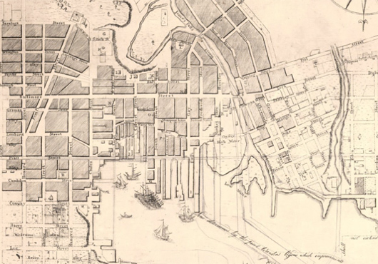
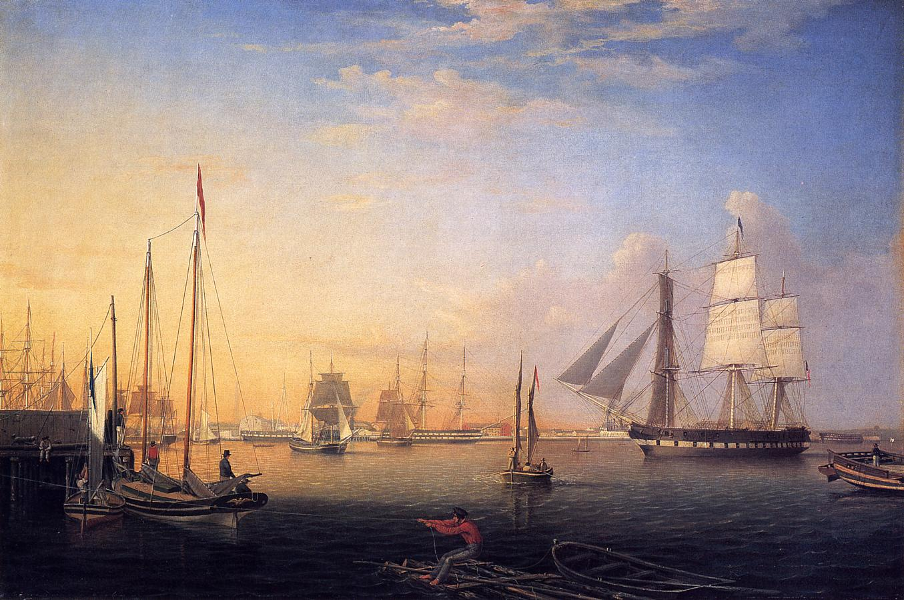
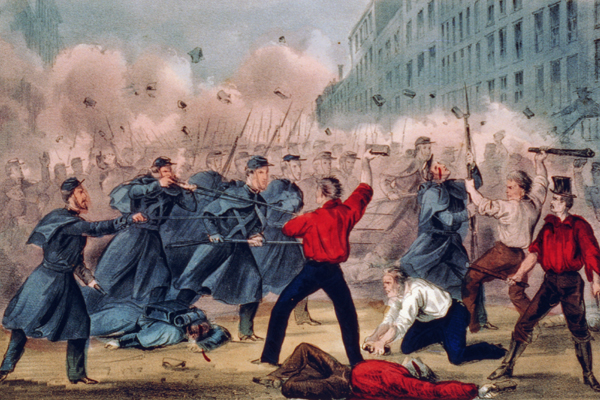

|
Founded in 1729 on the north side of the Patapsco River, the city of Baltimore was
named after Lord Baltimore, the first proprietary governor of the Maryland Province. It
grew quickly, and by the early 19th century was a center of commerce and industry. In the
antebellum era, Baltimore was one of America's largest and most important cities, though
it would lose this distinction thanks to the Civil War.
Baltimore was situated in an almost ideal location to benefit from the transatlantic
trade, close to both the agricultural regions of the South and the commercial centers of
the North. In addition, Maryland's soil is well suited to wheat cultivation, and so
Baltimore grew quite rapidly in its early years as it attracted many merchants, farmers,
|

Detailed map of Baltimore's city grid, 1792
|
and millers. This growth accelerated during the Revolutionary War, as Baltimore's
shipbuilders constructed rapidly moving ships that could maneuver through the British
blockades. These ships provided a great advantage to merchants who wished to continue
their trading, and attracted many migrants—between 1774 and the 1790s, the town of
Baltimore grew from 564 houses to over 3,000 houses. In 1797, Baltimore was formally
incorporated as a city.
During the early decades of the 19th century, Baltimore continued to grow, serving as a
major port and an important transportation center. It was the site of the United States's
first sugar refinery (1796), first silverware manufacturer (1815), first umbrella factory
(1828), and the first steam boating company in the country—Baltimore Steam Packet Company
(1840). By 1816, Baltimore's population numbered 46,000 resident, and by the time of the
1830 census, Baltimore had a population of 80,000, making it the second largest city in
the United States.
Consistent with its status as a hub of commerce, Baltimore was quite cosmopolitan by
the standards of its day. German settlers made up approximately ten percent of the
population, and sizable numbers of Scots-Irish settlers and Bavarian Jews also called the
city home. Throughout the 19th century, new immigrants from Ireland, Scotland, and France
arrived, as did white planters and their slaves the Caribbean. Baltimore also had a large
free African-American community during the antebellum period; they made up the vast
majority of the town's black citizens. On the eve of the Civil War, the city had 26,000
free blacks—which made up of 20% of the free black population in the entire country—and
2,000 slaves.
Baltimore's expansion was aided substantially by the Transportation Revolution of the
early 1800s, particularly the construction of the National Road. Authorized in 1806 and
completed by the 1830s, the National Road was the greatest single federal transportation
project to that date. The road connected the Ohio River to the Maryland city of
|

Portrait of Baltimore Harbor, showing the city's
thriving maritime trade, in 1850
|
Cumberland, and then Baltimore businessmen built turnpike roads from Cumberland to
Baltimore. Once Baltimore was connected to the West, it became the fastest growing city in
the country. The completion of the Erie Canal (1825), which gave other cities a cheap
means of transporting goods, briefly slowed Baltimore's growth and threatened to undermine
the city's economy. However, the Baltimore and Ohio Railroad Company was formed in 1830
and started to transport passengers and freight. By 1852, the railway covered 379 miles
and Baltimore reasserted itself as one of the nation's major transportation and commercial
hubs.
In addition to making its mark during the early industrialization of the country,
Baltimore also left an imprint on the history of the United States as the birthplace of
the national anthem. During the War of 1812, the British navy attacked Fort McHenry, the
primary defense for the port of Baltimore. Over the course of a 24-hour bombardment, the
fort's defenders held firm, and Baltimore was saved. The scene inspired author Francis
Scott Key to write a poem entitled "Defence of Fort McHenry." Set to the tune of the
British drinking song entitled "The Anacreontic Song," the composition was rechristened
the "Star Spangled Banner" shortly thereafter, and quickly became a popular patriotic
song. It was officially designated as the National Anthem in 1931.
As a city with ties to the commercial North and the slaveholding South, Baltimore was
left deeply divided by the events that led to the Civil War. Many Baltimoreans opposed
slavery and talk of secession—the city stayed in the Union throughout the Civil War—but a
vocal minority of residents passionately supported the Southern point of view. These
sentiments led to much conflict throughout the 1850s, with occasional outbreaks of
|

The Baltimore Riot of 1861 did much damage to the city's
reputation throughout much of the North.
|
violence. So tense was the situation that when Abraham Lincoln traveled to Washington,
D.C., for his inauguration, he passed through Baltimore in the middle of the night in a
disguise. On April 19, 1861, shortly after Lincoln took office, Union troops and Southern
partisans clashed in the streets of Baltimore. The Baltimore Riot of 1861, as it is known,
caused the first blood of the Civil War to be spilled.
Throughout the rest of the Civil War, the city's divided loyalties remained in
evidence. On one hand, Baltimore sent several regiments—both white and African-American—to
the Union Army. On the other, many Confederate spies were active in Baltimore, and the
city was also a hub for smuggling medicine and other supplies to the South. Many of the
town's citizens were jailed without benefit of trial because the Lincoln administration
believed they had helped the Confederacy with either their words or their actions.
During and after the Civil War, Baltimore went into decline. Most of the city's
investments were in the South, and these investments were wiped out. Though still an
important city, and a mecca for both displaced Southerners and freed slaves, Baltimore
never recovered the preeminence it enjoyed during the antebellum era.
Source: Christopher Bates for the History 139A website.
|